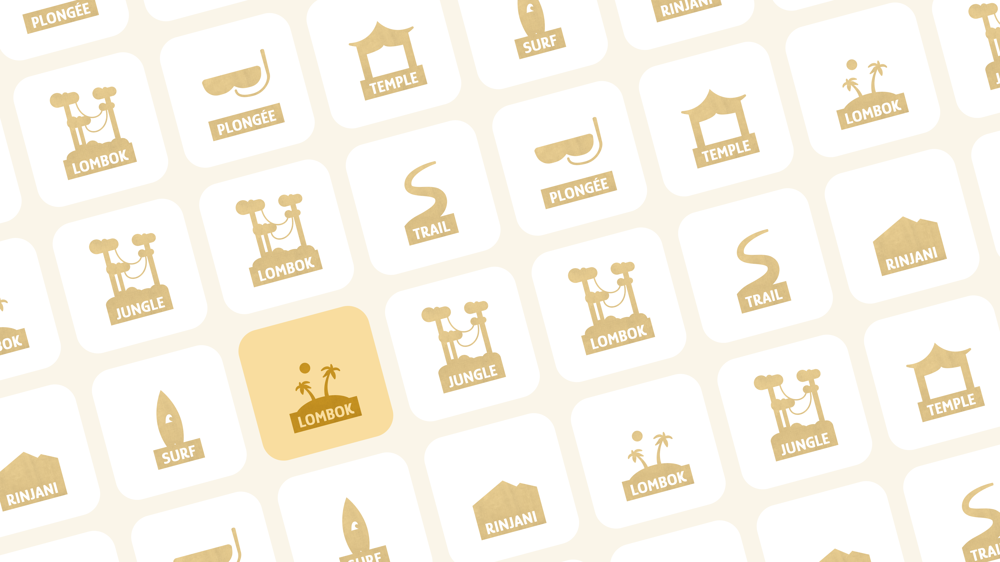
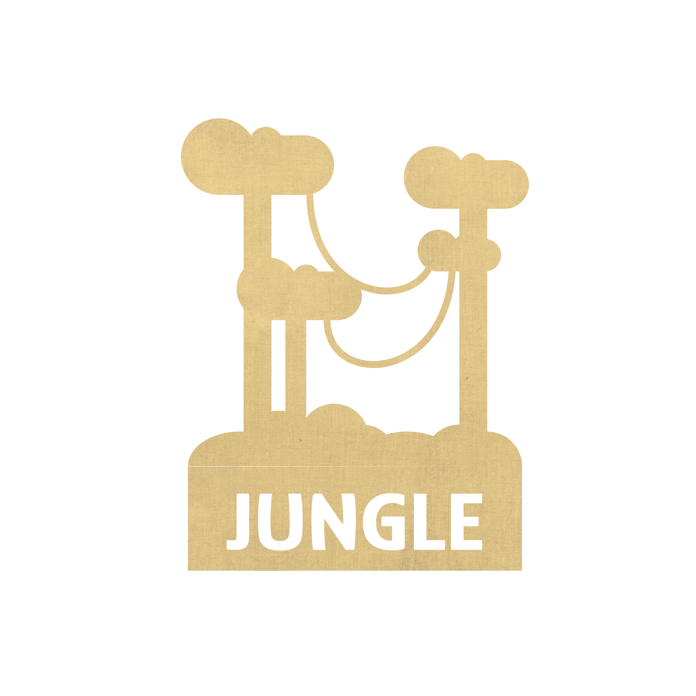
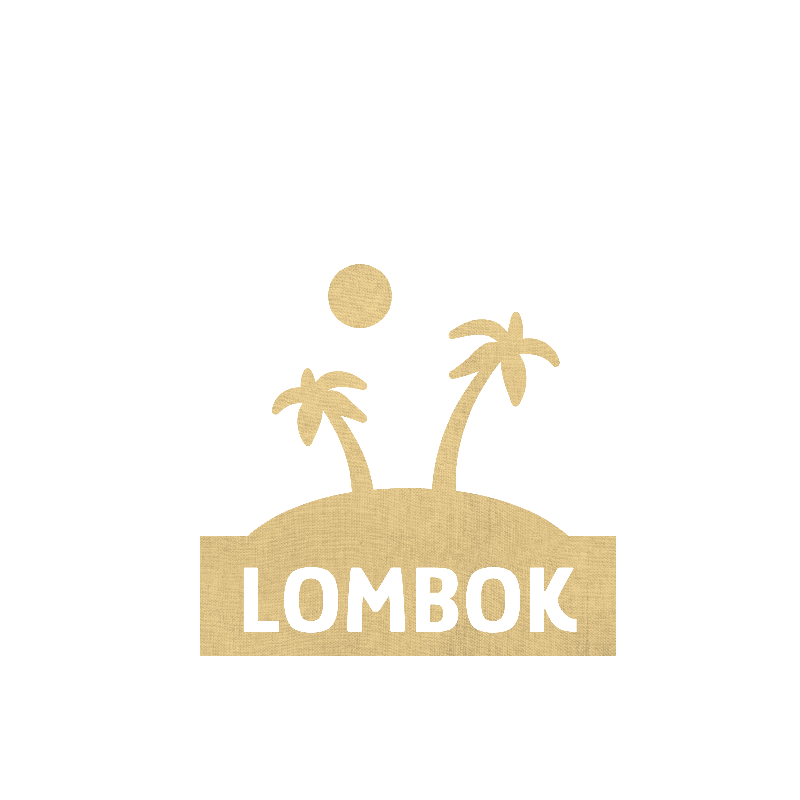
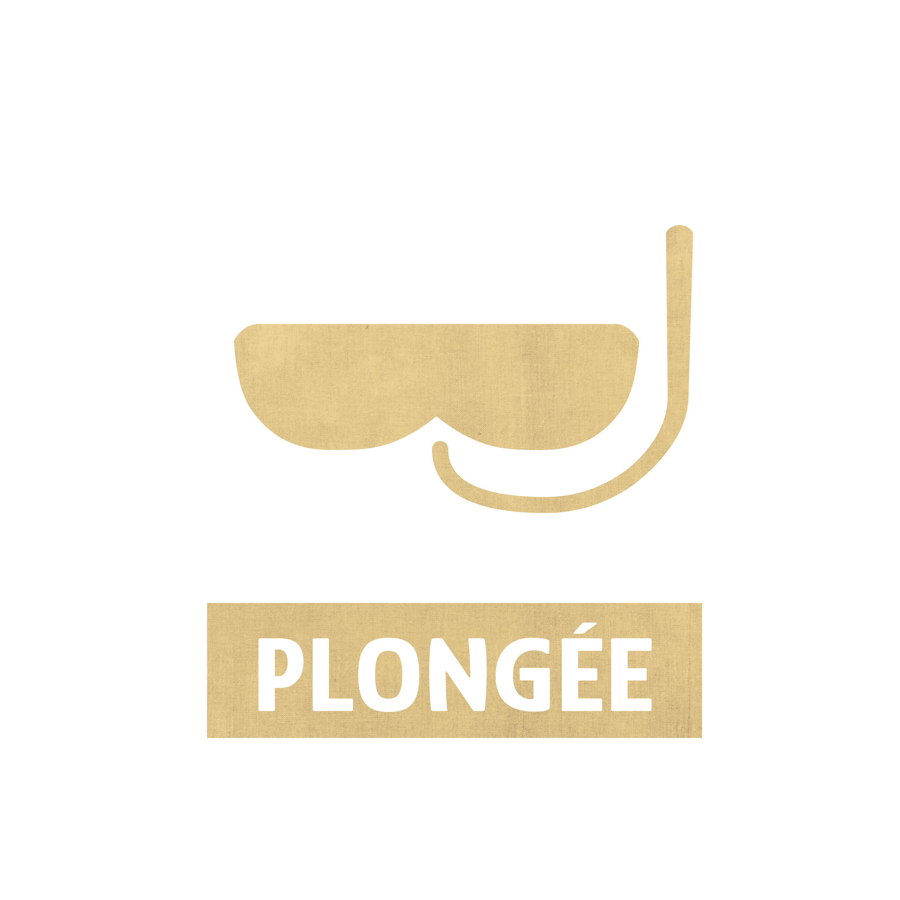
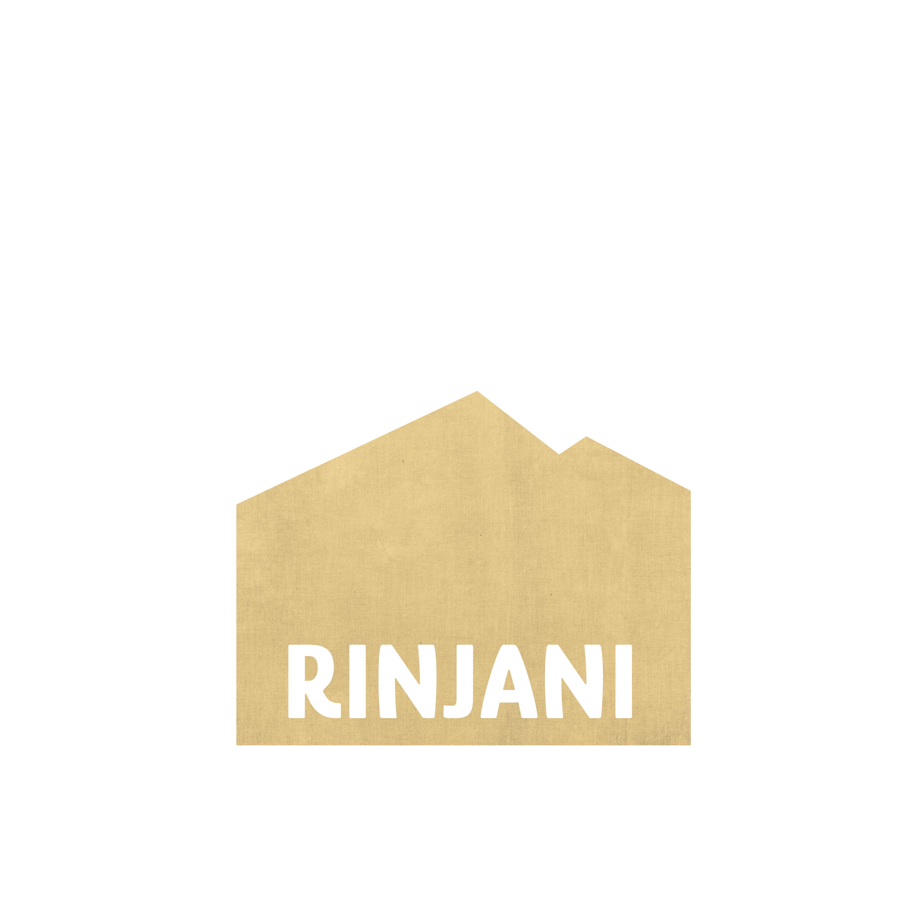
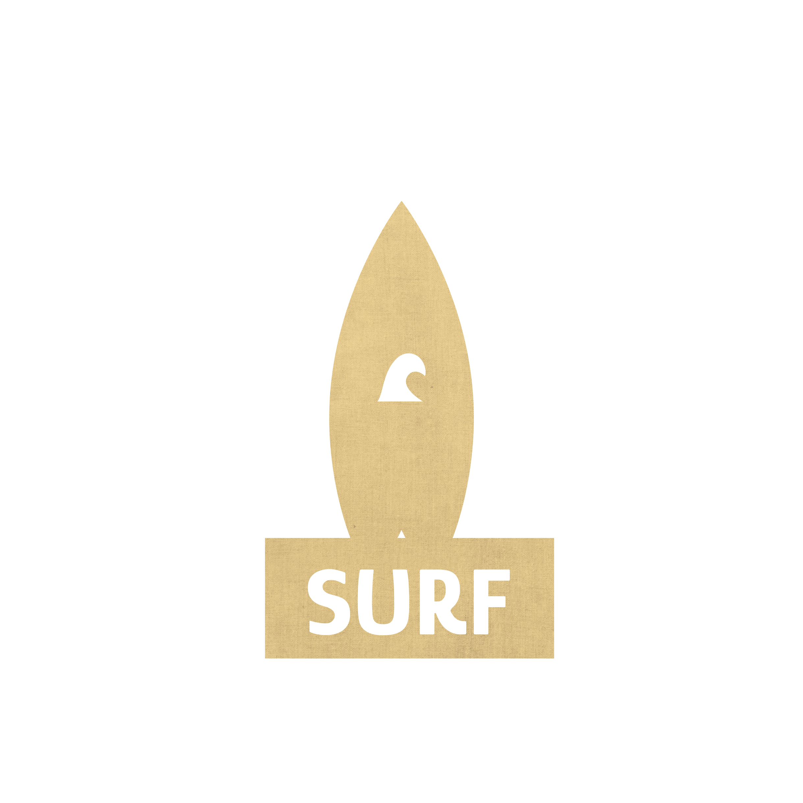

Lors d’un voyage touristique à Bali, j’ai eu l’occasion de réaliser et de filmer différentes activités tout au long de mon séjour. À la fin de ce voyage, j’ai souhaité créer un montage vidéo retraçant mes découvertes et mes expériences. C’est dans le cadre de ce projet que j’ai conçu ces icônes afin de mieux situer les différents lieux visités et d’illustrer les activités réalisées à chaque étape de mon voyage.





